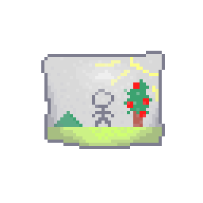

Importância da Arte
A arte é uma forma poderosa de expressão humana que transcende barreiras culturais e linguísticas, ela nos permite comunicar emoções, ideias e histórias de maneiras que as palavras muitas vezes não conseguem capturar, através da arte, podemos explorar nossa criatividade, refletir sobre a sociedade e conectar-nos com os outros em um nível mais profundo, não só isso, como também é uma parte muito importante para o crescimento, principalmente para crianças e bebês, onde a fala ainda está sendo desenvolvida, e mais, ajuda a explorar diferentes texturas e formas de desenhar.
Tipos de Desenho
Como a própria área da Arte, a parte do desenho também possui várias vertentes, inclusive, vertentes dentro de outras, cada uma tendo suas peculiaridades e jeitos.
Arte Abstrata
O abstracionismo é uma forma de arte que utiliza formas, cores e linhas para criar composições que não representam objetos ou cenas do mundo real de maneira literal.
Realismo
O realismo é um estilo de arte que busca representar os sujeitos e cenas de forma fiel e detalhada, refletindo a realidade de maneira precisa e objetiva.
Pixel Art
Sendo o tema do site, a pixel art mistura elementos digitais e artísticos para criar imagens que remetem aos gráficos dos primeiros videogames, conhecido como 8-bit.
Pontilhismo
O pontilhismo é uma técnica de pintura que utiliza pequenos pontos de cor aplicados em padrões para formar uma imagem, criando efeitos visuais únicos quando vistos de uma certa distância.
Todas as formas citadas podem ser realizadas de forma digital e tradicional
Materiais
Os materiais utilizados para desenhar podem variar dependendo do estilo e da técnica escolhida, mudando texturas e formas de se desenhar, mas alguns dos mais comuns incluem:
- Lápis: Usados para esboços iniciais e desenhos detalhados.
- Canetas e Marcadores: Para linhas definidas e arte em tinta.
- Tintas: Acrílicas, aquarelas e óleos são populares para pintura.
- Carvão: Utilizado para desenhos com sombreamento e texturas variadas.
- Tablets Gráficos: Conhecidos como Mesas Digitalizadoras, são ferramentas digitais que permitem desenhar diretamente no computador.
- Gizes: Temos diferentes tipos, como de cera, pastel oleoso e pastel seco, mudando a forma como se usa.
Evolução
Toda a trajetória que passei para chegar onde eu cheguei vai ser relatado aqui:
2012
Foi aqui que começou minha trajetória, embora não tenha fotos para registrar, foi um momento muito importante para meu eu explorar o mundo da arte, vendo as diferentes texturas que existia.
2016
Aqui foi onde eu comecei a, mais ou menos, achar meu estilo, assistia vários tutoriais e tava disposto a achar como eu poderia melhorar como artista.
2018
Em 2018 não teve tanto progresso, foi onde eu entrei em hiato e fiquei sem desenhar durante um bom tempo, mas essa foi a última arte antes do hiato.
2022
Em 2022 eu voltei com tudo, voltei para a área da arte, foi um momento bem criativo meu, mas não adiantava ter criatividade e não soltar ela, então voltei a desenhar, mas logo parei por conta da auto-crítica severa.
2024/2025
Hoje em dia, achei meu estilo e continuo praticando para melhorar cada vez mais.
E essa é a minha trajetória no mundo da arte!